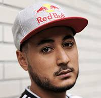
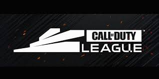

Gotaga : The French Monster
Notre fierté française, Gotaga, de son vrai nom Corentin Houssein, est une légende vivante de Call of Duty. Surnommé "Le French Monster", il a marqué l’histoire en tant que multiple champion d’Europe. Son talent exceptionnel et sa maîtrise du jeu ont inspiré une nouvelle génération de joueurs.
Bien qu’il soit désormais concentré sur le streaming et la création de contenu, son impact sur la communauté française de Call of Duty reste immense. Grâce à des initiatives comme la Gotaga Corp, il continue de promouvoir l’esport dans toute sa grandeur.

La Call of Duty League (CDL)
La Call of Duty League est le sommet de la compétition. Elle regroupe les meilleures équipes internationales dans un format de ligue suivi de play-offs intenses. Les matchs, joués dans des modes compétitifs comme Recherche et Destruction ou Point stratégique, exigent une stratégie parfaite et une grande maîtrise du jeu.
Avec chaque saison, la CDL offre un spectacle palpitant et une vitrine pour les meilleurs talents mondiaux.
